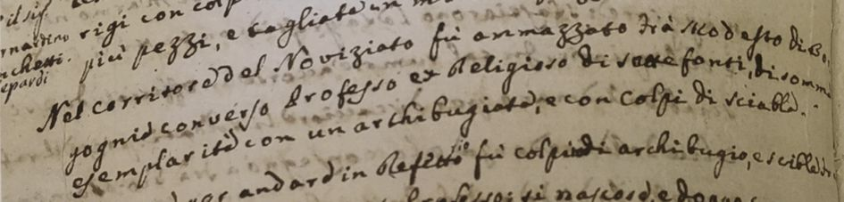
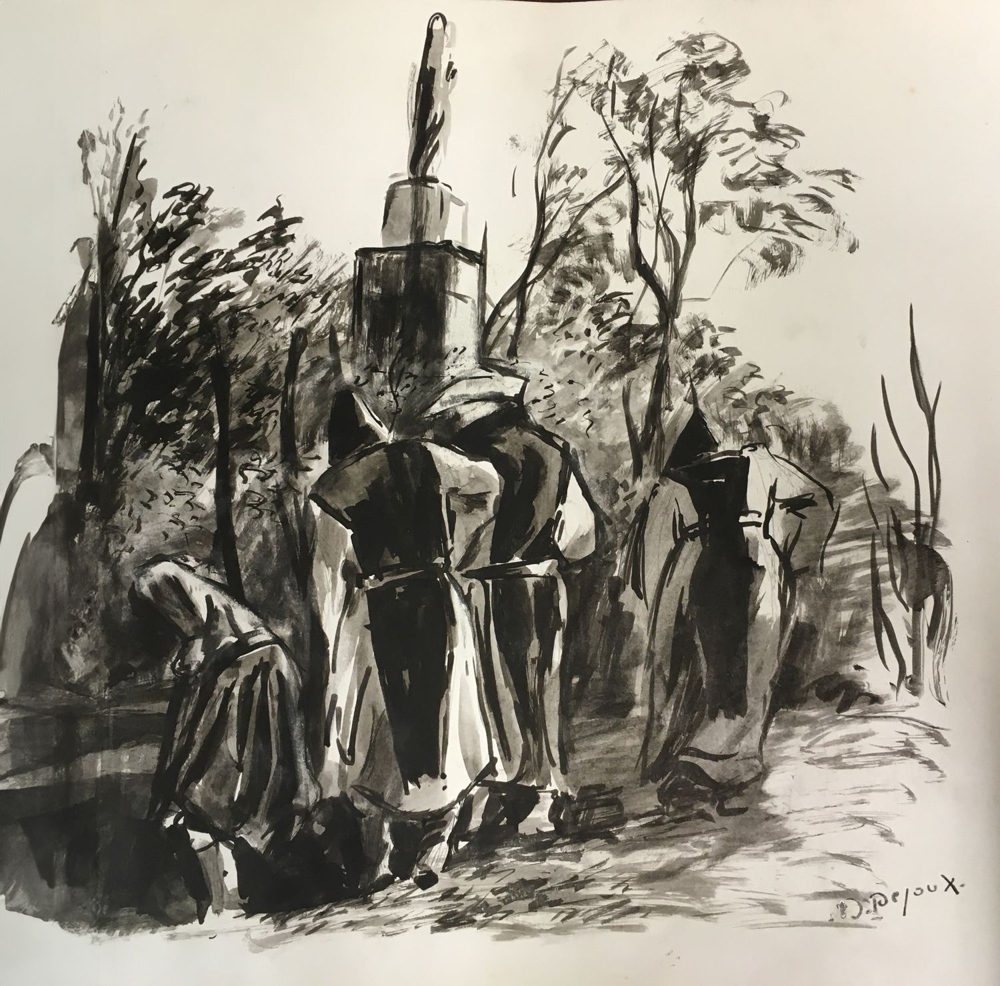
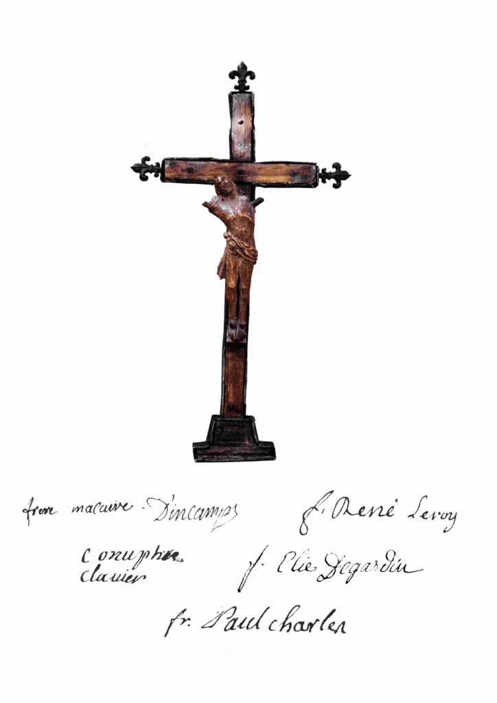
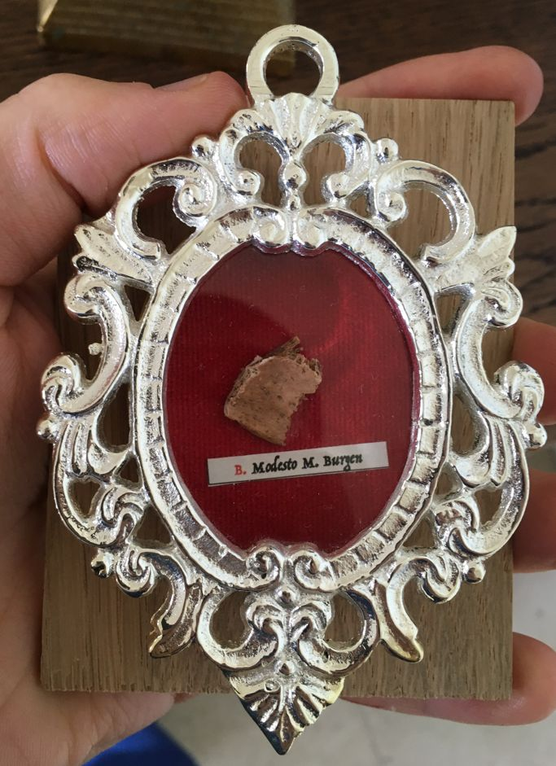

Archive de Casamari
Fidèles jusqu’au bout
Les bienheureux Paul, Élie et Modeste, moines trappistes, ont suivi le même chemin de fidélité héroïque. Ils viennent de l’abbaye de Sept-Fons et témoignent d’une foi inébranlable face à la tourmente révolutionnaire. Tous trois ont offert leur vie au Christ, à des moments et en des lieux différents, mais avec le même esprit de don total.
Une abbaye florissante avant la tempête
À Sept-Fons, une communauté fervente, dirigée par des abbés exemplaires comme Dom Eustache et Dom Dorothée, forme les trois futurs martyrs à la vie monastique. En 1789, la Révolution vient briser cet équilibre ancestral. La confiscation des biens, la suppression des vœux religieux et la dispersion des frères annoncent la fin d’une époque.

Une résistance silencieuse
Malgré une pression toujours plus forte, la majorité des moines choisit de rester à l’abbaye. Le prieur Paul Charles (le futur bienheureux Paul) guide la communauté et tente de préserver la vie monastique, d’abord à Montluçon, puis en exil. Leur refus de prêter le serment révolutionnaire entraîne leur expulsion et leur dispersion à travers l’Europe.

signatures des moines de Sept-Fons
Sur les pontons de Rochefort
Les autorités arrêtent plusieurs moines, dont Paul et Élie, et les emprisonnent sur les pontons de Rochefort. Là, dans des conditions inhumaines, ils persévèrent dans la prière et le silence. Leur martyre en 1794 exprime une foi vécue jusqu’au bout, dans une fidélité totale. La croix ci-contre, accompagnée des signatures de nos frères de Sept-Fons, a été vénérée durant leur captivité.

Le sacrifice de Modeste à Casamari
Frère Modeste trouve refuge en Italie, à l’abbaye trappiste de Casamari. Après quelques années de paix, des soldats révolutionnaires envahissent le monastère en 1799. Pour avoir défendu le sanctuaire, Modeste subit le martyre. Comme ses frères de Sept-Fons, il incarne une fidélité sans compromis jusqu’à la mort.
Une enquête toujours en cours
Des frères de notre communauté, en collaboration avec d’éminents chercheurs et historiens, poursuivent leurs travaux pour mieux éclairer la vie et le martyre du bienheureux Modeste. De nouveaux éléments pourraient bientôt enrichir notre connaissance de ce témoin de la foi. En attendant, nous vous invitons à suivre nos actualités pour en savoir plus.